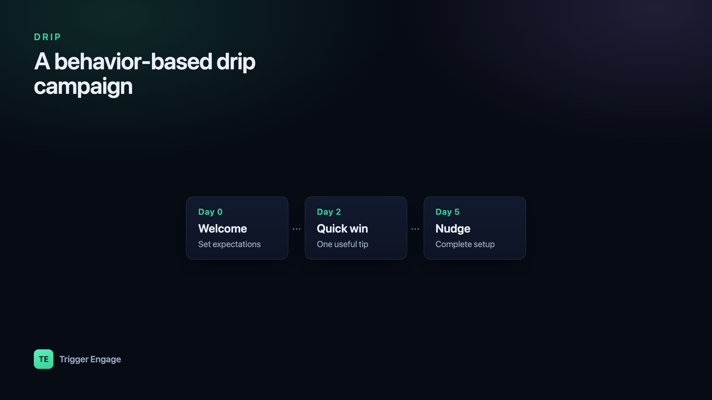

A drip campaign sends the right pre-planned messages over time, automatically — a slow drip of value instead of one firehose blast. Done well, it feels like a person quietly paying attention to what you need next. Done badly, it's a robotic sequence that ignores everything you actually did. This guide walks through the difference and shows you how to build a drip that converts.

What is a drip campaign?
A drip campaign is a series of automated messages sent on a schedule or in response to actions, all pushing toward a single goal — activating a new signup, converting a trial, recovering an abandoned cart. You write the messages once, decide what starts the sequence and how the steps are spaced, and the system delivers them for you. The word "drip" is the whole point: instead of dumping everything at once, you release the right message at the right moment so it lands when it's useful.
Every drip has three moving parts: a trigger that starts it, a set of messages with timing between them, and an exit that stops it once the goal is met. Miss the exit and you'll keep nagging people who already converted — the fastest way to earn an unsubscribe.
Time-based vs behavior-based drips
There are two ways to decide when the next message goes out.
Time-based (calendar) drips fire on a fixed schedule: day 1, day 3, day 7. Everyone who enters gets the same messages at the same intervals regardless of what they do. They're simple to build and fine for content that's genuinely universal — a course delivered one lesson a day, say.
Behavior-based (triggered) drips react to what someone actually does. Someone finishes onboarding step two, so the next message coaches step three — not a generic "keep going" that ignores their progress. Someone views the pricing page three times, so a sales nudge goes out. Because the message matches the moment, behavior-based drips almost always win on engagement and conversion.
The catch is that reacting to behavior only works if you can define audiences by behavior. That's where good behavioral segmentation earns its keep: a self-updating segment of "activated but not converted" users is what makes a triggered drip possible in the first place.
Common drip campaigns
A handful of drips do most of the heavy lifting for any product or store:
- Welcome / onboarding. Sent right after signup to get people to their first win. This is the highest-leverage drip you'll build — see our onboarding emails breakdown for concrete examples.
- Lead nurture. For prospects who aren't ready to buy. You drip education, proof, and gentle CTAs over weeks until intent shows up.
- Free-trial conversion. Timed and behavior-aware messages across the trial window — highlight the features they haven't tried, then make the upgrade ask before the clock runs out.
- Abandoned cart / checkout. Someone added items or started checkout and left. A two-or-three-message drip within 24 hours recovers a surprising share of that revenue.
- Re-engagement (win-back). For users who've gone quiet. Remind them what they're missing, offer a reason to return, and if they still don't respond, let them lapse cleanly.
How to build a drip, step by step
- Pick one goal and the trigger. One drip, one job. Decide the outcome ("convert the trial") and the event that starts the sequence ("trial started"). Firing from an event, not a manual list upload, is what keeps a drip timely.
- Define the audience. Who should be in this drip, and who shouldn't? A self-updating segment beats a static list — people join and leave automatically as their behavior changes.
- Map messages and timing. Sketch each step and the delay between them. Front-load value; space things so you're present without being pushy.
- Write with a single CTA each. One message, one ask. Competing buttons dilute the click. Every email should point at the one next action.
- Set an exit or goal. The moment someone converts, they should drop out of the sequence. This is the step teams forget, and it's the one that protects your reputation.
- Measure and iterate. Watch how far people progress and where they stall, then fix the weakest step.
A single drip is one thread in a bigger picture. Zoom out and you're designing a full set of lifecycle email sequences that hand users off from one stage to the next — which is really just marketing automation applied to the whole customer journey rather than one moment in it.
Tools like Trigger Engage make this concrete: you assemble a visual journey out of blocks — trigger, delay, branch, wait-for-event, send, and goal — that fires from the events your product already emits, so the drip reacts to real behavior instead of a calendar. It's open source, self-hostable, and free.
Drip vs newsletter vs lifecycle
These three get lumped together, but they behave differently:
| Type | What starts it | Timing | Goal |
|---|---|---|---|
| Drip campaign | An event or a signup | Fixed intervals or behavior-triggered | Move one person to one outcome |
| Newsletter | You hitting "send" | Broadcast, same time to everyone | Ongoing engagement & awareness |
| Lifecycle program | Many events across the journey | Multiple connected sequences | Guide the whole relationship end-to-end |
In short: a newsletter is a scheduled broadcast, a drip is a goal-oriented automated sequence, and a lifecycle program is the collection of drips that covers a customer from first touch to renewal.
Make it feel 1:1
The best drips read like they were written for one person. Two techniques get you most of the way there. First, personalize with Liquid — pull in first names, the plan they're on, the exact feature they haven't used yet, or their trial's days remaining, so the copy reflects their situation instead of an average. Second, A/B test the things that actually move the needle: subject lines and send timing. A subject-line test can lift opens by double digits, and shifting a message a day earlier or later often matters more than the wording inside it.
Metrics that matter
Opens and clicks are diagnostics, not the score. The metric that tells you whether a drip works is goal completion — the share of people who entered and reached the outcome — and progression, how far through the sequence people get before they stall or convert. Track those and the weak step announces itself: a big drop-off between message two and three tells you exactly where to rewrite. Optimizing for opens can leave you with a "successful" campaign that converts nobody.